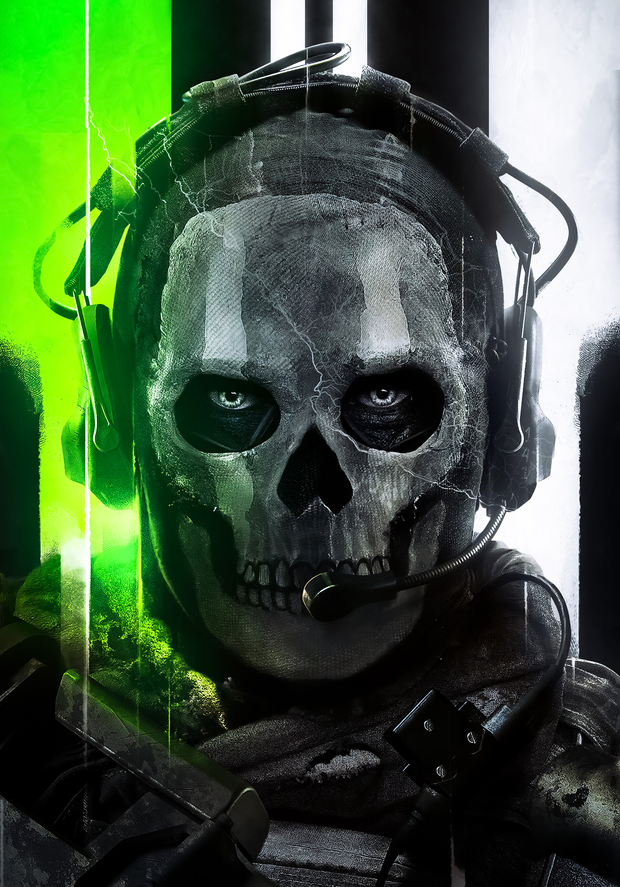
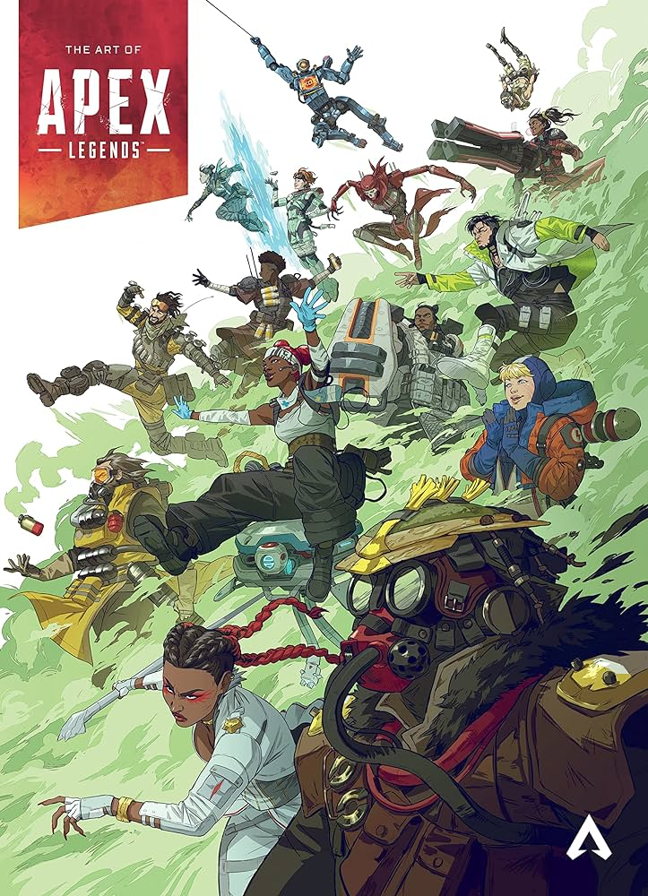

Fps Játékok

Az FPS játékok, vagyis az első személyű lövöldözős játékok az egyik legnépszerűbb és legikonikusabb műfaj a videojáték-iparban. Ezek a játékok arról híresek, hogy a játékosokat közvetlenül a karakterük szemén keresztül helyezik a játék világába, így lehetővé téve egy intenzív és izgalmas élményt.
Az FPS játékokat általában egy vagy több játékosból álló csapatok versenyeznek egymással, vagy pedig a játékosok egyedül küzdenek meg a virtuális ellenfelekkel. Ezek a játékok gyakran izgalmas, gyors tempójú és akciódús élményt nyújtanak, miközben a játékosoknak gyors reakcióidőre és precíz célzásra van szükségük a sikeres játékhoz.
Az FPS játékokban a fegyverek és a taktika kulcsfontosságú szerepet játszanak. A játékosok általában különböző típusú  fegyvereket használhatnak, amelyek mindegyike más és más távolságokban vagy helyzetekben hatékony lehet. Emellett a taktika és a csapatmunka is kiemelt jelentőséggel bír, hiszen egy jól összehangolt csapat gyakran döntő előnyt jelenthet a csatákban.
Az FPS játékok gyakran rendelkeznek multiplayer módokkal, amelyek lehetővé teszik a játékosok számára, hogy online összemérjék erejüket más játékosokkal szerte a világon. Ezek a multiplayer módok változatos lehetőségeket kínálnak, például Team Deathmatch (csapat alapú megölés), Capture the Flag (a zászló elfoglalása), vagy akár Battle Royale (utolsó ember/utolsó csapat állva maradás).
Az FPS játékoknak hatalmas és szenvedélyes rajongótábora van, és számos ikonikus címmel büszkélkedhetnek a műfajban. Néhány közismert példa közéjük tartozik a Call of Duty sorozat, a Battlefield sorozat, a Counter-Strike sorozat és a Halo sorozat, de természetesen még sok más remek FPS játék létezik, amelyek mindegyike más és más módon nyújt kihívást és szórakozást a játékosoknak.

Rainbow Six Siege
A Tom Clancy's Rainbow Six® Siege egy elit, valósághű, taktikai, csapatalapú lövöldözős játék, ahol a kiváló tervezés és kivitelezés győzedelmeskedik. 5v5 támadás kontra védelem játékmenetet és intenzív közelharcot kínál elpusztítható környezetben. Támadáskor vezesse csapatát szűk folyosókon, elbarikádozott ajtókon és megerősített falakon keresztül. Kombinálja a taktikai térképeket, a megfigyelő drónokat, a repülést és még sok mást, hogy minden helyzetet megtervezz, támadj és hatástalaníts.
Ár: 5000ft
Fejlesztő: Ubisoft Montreal
Értékelése Steamen: Nagyon pozitív
Megvásárolható: Steam
Kiadó: Ubisoft
Műfaj: Akció
| CPU: | Intel Core i5-2500K @ 3.3 GHz or better or AMD FX-8120 @ 3.1 Ghz or better |
| RAM: | 8 GB RAM |
| GPU: | NVIDIA GeForce GTX 670 (or GTX760 / GTX960) or AMD Radeon HD 7970 (or R9 280x [2GB VRAM] / R9 380 /) |
| DX: | DirectX 11 |
| OS: | Windows 7 SP1, Windows 8.1, Windows 10 (64bit versions required) |
| STO: | 61 GB available space |
Kevesebb